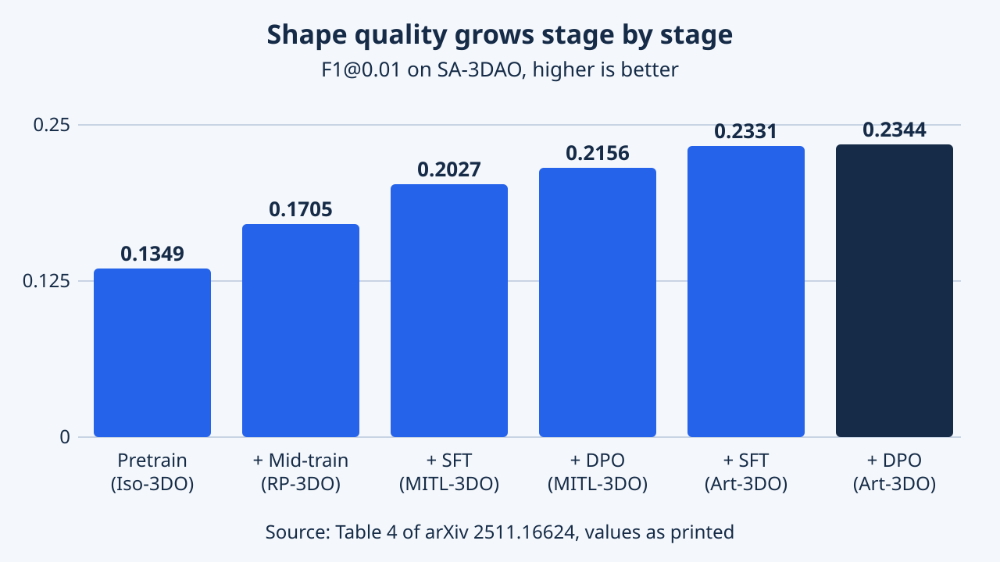

SAM 3D: 3Dfy Anything in Images
SAM 3D tái dựng hình học, texture và bố trí đối tượng từ một ảnh. Quy trình gán nhãn có con người và mô hình tham gia kết hợp pretraining tổng hợp với căn chỉnh dữ liệu thực để xử lý ảnh có che khuất và nền phức tạp.
SAM 3D dựng lại vật thể 3D từ một ảnh tự nhiên. Bài viết đi qua cách đặt bài toán, data engine, mô hình flow hai giai đoạn và kết quả báo cáo. Giải thưởng là ghi nhận chính thức của hội nghị; phần phân tích là cách đọc riêng của EyeCode.
Tổng quan
Đưa cho SAM 3D một bức ảnh bình thường và một mặt nạ chỉ vào một vật, nó dựng ra phiên bản 3D của vật đó: hình dạng, màu bề mặt và vị trí trong cảnh. Một nhóm của Meta tạo ra mô hình này, và bài nhận Best Paper Honorable Mention tại CVPR 2026.
SAM 3D (mô hình phát hành là SAM 3D Objects) dựng một vật thể 3D từ một ảnh và mặt nạ đánh dấu vật đó. Đầu ra gồm hình dạng, texture và layout: góc xoay, tịnh tiến và tỉ lệ của vật trong hệ tọa độ camera. Mục tiêu là ảnh đời thường lộn xộn chứ không phải ảnh sản phẩm sạch. Pointmap (bản đồ 3D theo từng pixel suy từ độ sâu) là đầu vào tùy chọn; khi không có cảm biến, các tác giả ước lượng bằng một mô hình độ sâu có sẵn.
Các tác giả nêu bốn đóng góp: mô hình; pipeline gán nhãn có người và mô hình cùng tham gia; công thức huấn luyện mượn từ mô hình ngôn ngữ, từ pretraining tổng hợp tới căn chỉnh trên ảnh thật; và SA-3DAO, benchmark gồm 1.000 ảnh kèm mesh do họa sĩ làm.
Vì sao quan trọng: nhãn 3D chính xác cho ảnh tự nhiên rất khan hiếm, nên công thức này là khuôn mẫu cho lĩnh vực thiếu dữ liệu. CVPR 2026 xếp bài vào nhóm Best Paper Honorable Mention; đó là ghi nhận của hội nghị, không phải xếp hạng của EyeCode.
Bài báo giới thiệu SAM 3D như một foundation model cho dựng lại vật thể từ một ảnh, dự đoán chung toàn bộ tài sản 3D và layout trong cảnh. Tuyên bố chính không phải là một mạng mới mà là một công thức: đem quy trình pretraining, mid-training và post-training kèm căn chỉnh theo sở thích của mô hình ngôn ngữ áp vào 3D, nơi dữ liệu có nhãn thật ít hơn văn bản hay ảnh hàng bậc độ lớn.
Bốn đóng góp là mô hình, data engine nơi người gán nhãn chọn trong các ứng viên do mô hình sinh thay vì tự dựng mesh, khung huấn luyện nhiều giai đoạn, và SA-3DAO với mesh do họa sĩ 3D chuyên nghiệp làm cho ảnh thật, được các tác giả coi là cận trên của con người chuyên gia. Mã nguồn, checkpoint và bản demo đã phát hành; bản ghi arXiv có phiên bản v2 sửa đổi vào tháng 6 năm 2026. Trang CVF liệt kê cùng 22 tác giả theo cùng thứ tự với arXiv (arXiv còn ghi tập thể 'SAM 3D Team' ở đầu). Trang giải thưởng chính thức xếp bài vào Best Paper Honorable Mentions của CVPR 2026, còn các tuyên bố vượt trội dưới đây là của chính tác giả.
Bài toán nghiên cứu
Một bức ảnh làm phẳng thế giới. Chiếc cốc nhìn từ bên cạnh giấu mặt sau, chiếc ghế sau bàn giấu chân ghế. Nhiều vật 3D khác nhau có thể cho ra cùng một bức ảnh, nên mô hình phải đoán hợp lý. Dữ liệu để dạy việc đoán 3D hiếm hơn nhiều so với dữ liệu ảnh thường.
Đầu vào: ảnh I và mặt nạ M chọn một vật. Đầu ra: hình dạng S, texture T và tư thế (xoay R, tịnh tiến t, tỉ lệ s) trong tọa độ camera. Vì chiếu 3D xuống 2D làm mất thông tin, các tác giả mô hình hóa một phân phối có điều kiện trên các đáp án và huấn luyện mô hình sinh, thay vì dự đoán một đáp án cố định.
Thách thức: ảnh thật có che khuất, lộn xộn và vật nhỏ, trong khi nhãn 3D chính xác khan hiếm và họa sĩ mất hàng giờ cho một mesh. Theo bài, các công trình trước chủ yếu huấn luyện trên vật tổng hợp đứng riêng và thử trên benchmark đơn giản, còn phương pháp layout chủ yếu phủ cảnh bàn, đường phố hoặc trong nhà, thường ước lượng hình dạng và tư thế ở các bước riêng.
Chính thức, bài nhắm tới $p(S,T,R,t,s \mid I,M)$ và huấn luyện một xấp xỉ sinh $q$. Dự đoán layout ngay trong cùng một mô hình, thay vì đăng ký hình dạng về sau, là có chủ ý: toàn bộ ảnh cung cấp ngữ cảnh giúp quyết định vật là gì và nằm ở đâu. SAM 3D xử lý vật bị che chủ yếu bằng dữ liệu chứ không bằng kiến trúc đặc biệt.
Nút thắt là giám sát. Tài sản tổng hợp cho hình dạng và texture nhưng còn khoảng cách miền với ảnh thật, còn dựng mesh bằng tay không mở rộng được. Quan sát then chốt là phần lớn mọi người không tạo được mesh nhưng chọn được mesh nào khớp nhất với vật trong ảnh, nên nhiệm vụ được chuyển từ sinh sang kiểm chứng. Đánh giá là khoảng trống thứ hai: các tác giả cho rằng benchmark ảnh thật hiện có nhỏ, trong nhà và lệch về đồ nội thất, nên họ làm SA-3DAO với cảnh từ công viên, khu trượt tuyết, chợ đồ cũ và lễ diễu hành, thời gian họa sĩ làm từ khoảng 5 phút tới hơn 5 giờ mỗi vật (mesh trung vị có 4.751 đỉnh).
Ý tưởng chính
Thay vì trả tiền cho họa sĩ dựng mọi thứ, hãy để AI đề xuất vài phương án 3D, nhờ người chọn phương án tốt nhất, và chỉ gửi các ca khó nhất cho họa sĩ chuyên nghiệp. Sau đó huấn luyện lại trên các lựa chọn đó và lặp lại, như một học sinh liên tục được chấm điểm và tiến bộ.
Ý tưởng trung tâm là vòng lặp giữa mô hình và người gán nhãn. Mô hình cùng các công cụ khác đề xuất hình 3D ứng viên cho ảnh thật, người gán nhãn chọn cái tốt nhất và chấm điểm, kết quả được nhận thành dữ liệu huấn luyện, còn ứng viên bị loại thành mẫu âm cho huấn luyện theo sở thích.
Ví dụ minh họa (do EyeCode diễn đạt): với chiếc ghế bị che một nửa, khoảng 8 ứng viên được so từng cặp; bên thắng được chấm và, nếu đủ tốt, căn vào đám mây điểm để huấn luyện. Nếu không cái nào đạt, họa sĩ 3D có thể dựng.
Ý tưởng thứ hai là công thức nhiều giai đoạn lấy cảm hứng từ mô hình ngôn ngữ: pretraining tổng hợp, mid-training trên ảnh dán vật render, rồi post-training trên dữ liệu thật bằng SFT và DPO. Về cuối dự án, mô hình tạo ra khoảng 80 phần trăm dữ liệu được gán nhãn.
Hai ý tưởng đan vào nhau. Data engine khai thác sự bất đối xứng giữa sinh và kiểm chứng: người gán nhãn chọn tốt nhất trong N=8 ứng viên từ một ensemble mô hình, loại kết quả dưới ngưỡng chất lượng và căn mesh được nhận vào đám mây điểm. Các ca khó mà không mô hình nào xử lý được chuyển cho họa sĩ chuyên nghiệp và tạo thành Art-3DO, nên giám sát đến đúng nơi mô hình yếu nhất. Các tác giả mô tả vòng lặp như một thuật toán căn chỉnh gần với Expert Iteration và RLHF: ensemble cộng best-of-N của người khuếch đại chính sách hiện tại, và ngưỡng chất lượng tăng qua các vòng, giống phương pháp cross-entropy. Tóm tắt của họ: việc sinh dữ liệu xuất hiện như sản phẩm phụ của căn chỉnh.
Công thức đặt dữ liệu tổng hợp rẻ ở nền và dữ liệu nhỏ do người kiểm duyệt ở đỉnh. Mid-training bổ sung bám mặt nạ, chịu che khuất và layout bằng ảnh ghép render-and-paste có hình học chuẩn chính xác. Post-training lặp SFT rồi DPO qua nhiều vòng của engine, nên mô hình tốt hơn cho nhãn tốt hơn. Bài cũng nói chỉ riêng loss flow matching là đủ: loss hình học tường minh có ích khi ít dữ liệu và ít tính toán, nhưng giá trị giảm khi dữ liệu và tính toán tăng.
Phương pháp


Hãy nghĩ tới hai họa sĩ. Người thứ nhất phác một khối thô của vật và quyết định nó xoay thế nào, to cỡ nào trong cảnh. Người thứ hai thêm chi tiết mịn và màu sắc. Bước cuối biến kết quả thành mesh hoặc một đám đốm màu 3D.
Đầu vào: toàn ảnh và vùng cắt theo mặt nạ, mã hóa bằng DINOv2, cộng pointmap tùy chọn. Thiết kế mở rộng latent flow matching hai giai đoạn của Trellis để dự đoán thêm layout.
- Mô hình hình học: flow transformer 1,2 tỉ tham số dự đoán lưới thô 64 khối cùng xoay, tịnh tiến và tỉ lệ.
- Mô hình texture và tinh chỉnh: sparse flow transformer 600 triệu tham số thêm chi tiết và texture trên các voxel bị chiếm.
- Bộ giải mã: cho ra mesh hoặc 3D Gaussian splat.
Huấn luyện dùng flow matching, sau đó DPO. Chưng cất giảm lấy mẫu hình học từ 25 xuống 4 bước để ra kết quả dưới một giây. Pretraining dùng khoảng 2,7 triệu mesh render từ 24 góc nhìn; mid-training dùng 61 triệu mẫu render-and-paste.
Điều kiện đầu vào: đặc trưng DINOv2 của góc nhìn cắt quanh vật và của toàn ảnh, mỗi cái kèm mặt nạ, cho bốn nhóm token; pointmap cảnh tùy chọn đến từ cảm biến như LiDAR hoặc từ ước lượng độ sâu đơn ảnh. Mô hình hình học mô hình hóa $p(O,R,t,s \mid I,M)$ với $O \in \mathbb{R}^{64^3}$. Hình dạng được khử nhiễu trong không gian ẩn của biểu diễn thô hơn $16^3 \times 8$ như Trellis; layout được khử nhiễu trực tiếp trong không gian tham số. Các lớp chiếu riêng theo modality đưa hình dạng (4.096 token) và layout (1 token) về chiều chung 1.024, và Mixture-of-Transformers dùng một transformer cho token hình dạng, một transformer khác cho token layout, nối với nhau bằng self-attention chung. Nhờ đó có thể tinh chỉnh riêng một modality mà góc xoay vẫn neo vào hình dạng.
Pretraining và SFT cực tiểu một loss rectified flow matching đa modality, $\mathcal{L}=\sum_m \lambda_m \mathbb{E}\,\lVert v^m - v_\theta^m(x^m_\tau, c, \tau)\rVert^2$, với trọng số theo modality (hình dạng 1,0, xoay 0,1, tịnh tiến 1,0 và tỉ lệ 0,1 ở các giai đoạn sau, Bảng 5). DPO theo Diffusion-DPO được điều chỉnh cho flow matching: với một mẫu được chọn và một mẫu bị loại, nó thưởng cho sai số flow matching ở mẫu thắng thấp hơn mô hình tham chiếu đóng băng, so với mẫu thua. Mẫu âm từ nguồn không phải SAM 3D bị bỏ trước DPO. Chưng cất dùng shortcut model tinh chỉnh từ checkpoint đã huấn luyện (khoảng 4K vòng lặp, 75 phần trăm flow matching và 25 phần trăm shortcut), có chưng cất cả classifier-free guidance; bài báo cho biết nhanh hơn 38 lần (1 bước) và 10 lần (4 bước) so với 25 bước flow matching. Mô hình texture không được chưng cất ở bản phát hành cuối.
Lịch huấn luyện (Bảng 1 và 5): pretraining trên Iso-3DO với vùng cắt quanh vật (2,5 nghìn tỉ token); mid-training trên RP-3DO và ProcThor với điều kiện toàn ảnh, thêm tịnh tiến và tỉ lệ ở phần hai (khoảng 2,7 nghìn tỉ token); SFT trên MITL-3DO rồi Art-3DO; DPO trên 44K mẫu sở thích. Vòng post-training cuối dùng khoảng 0,5 nghìn tỉ token, và lần SFT cuối giữ 500K mẫu vượt ngưỡng chất lượng. Mô hình texture có các giai đoạn tương tự, một Depth-VAE chỉ chiếu ngược đặc trưng vào voxel nhìn thấy, và ảnh render ánh sáng môi trường đã xóa bóng để học texture không dính bóng đổ. Thời gian từng bước: khoảng 10 giây tách một vật, 80 giây chọn trong 6 tới 10 ứng viên và 150 giây căn một vật. Cả dự án, engine cho 3,14 triệu hình có thể huấn luyện, 1,23 triệu mẫu layout, 100K texture và hơn 7 triệu cặp sở thích, từ 850K thực thể vật trong 360K ảnh (phụ lục A).
Thực nghiệm & kết quả
| Mô hình | F1@0.01 (SA-3DAO) ↑ | vIoU (SA-3DAO) ↑ | Chamfer (SA-3DAO) ↓ | EMD (SA-3DAO) ↓ | ULIP (ISO3D) ↑ | Uni3D (ISO3D) ↑ |
|---|---|---|---|---|---|---|
| Trellis | 0.1475 | 0.1392 | 0.0902 | 0.2131 | 0.1473 | 0.3698 |
| HY3D-2.1 | 0.1399 | 0.1266 | 0.1126 | 0.2432 | 0.1293 | 0.3546 |
| HY3D-2.0 | 0.1574 | 0.1504 | 0.0866 | 0.2049 | 0.1484 | 0.3662 |
| Direct3D-S2 | 0.1513 | 0.1465 | 0.0962 | 0.2160 | 0.1405 | 0.3653 |
| TripoSG | 0.1533 | 0.1445 | 0.0844 | 0.2057 | 0.1529 | 0.3687 |
| Hi3DGen | 0.1629 | 0.1531 | 0.0937 | 0.2134 | 0.1419 | 0.3594 |
| SAM 3D | 0.2344 | 0.2311 | 0.0400 | 0.1211 | 0.1488 | 0.3707 |
| Phương pháp | SA-3DAO 3D IoU ↑ | SA-3DAO ICP-Rot ↓ | SA-3DAO ADD-S@0.1 ↑ | ADT 3D IoU ↑ | ADT ICP-Rot ↓ | ADT ADD-S ↓ | ADT ADD-S@0.1 ↑ |
|---|---|---|---|---|---|---|---|
| Trellis + Megapose | 0.2449 | 39.3866 | 0.2831 | 0.2531 | 33.6114 | 0.4358 | 0.1971 |
| HY3D-2.0 + Megapose | 0.2518 | 33.8307 | 0.3647 | 0.3794 | 29.0066 | 0.1457 | 0.4211 |
| HY3D-2.0 + FoundationPose | 0.2937 | 32.9444 | 0.5396 | 0.3864 | 25.1435 | 0.1026 | 0.5992 |
| HY3D-2.1 + FoundationPose | 0.2395 | 39.8357 | 0.4177 | 0.2795 | 33.1197 | 0.2135 | 0.4129 |
| SAM 3D shape + FoundationPose | 0.2837 | 32.9168 | 0.5079 | 0.3661 | 18.9102 | 0.0930 | 0.6495 |
| MIDI (joint) | - | - | - | 0.0336 | 44.2353 | 2.5278 | 0.0175 |
| SAM 3D (joint) | 0.4254 | 20.7667 | 0.7232 | 0.4970 | 15.2515 | 0.0765 | 0.7673 |
| Giai đoạn huấn luyện | F1@0.01 ↑ | vIoU ↑ | Chamfer ↓ | EMD ↓ | Tỉ lệ thắng texture % ↑ |
|---|---|---|---|---|---|
| Pretraining (Iso-3DO) | 0.1349 | 0.1202 | 0.1036 | 0.2396 | - |
| + Mid-training (RP-3DO) | 0.1705 | 0.1683 | 0.0760 | 0.1821 | 60.7 |
| + SFT (MITL-3DO) | 0.2027 | 0.2025 | 0.0578 | 0.1510 | 66.9 |
| + DPO (MITL-3DO) | 0.2156 | 0.2156 | 0.0498 | 0.1367 | 66.4 |
| + SFT (Art-3DO) | 0.2331 | 0.2337 | 0.0445 | 0.1257 | - |
| + DPO (Art-3DO) | 0.2344 | 0.2311 | 0.0400 | 0.1211 | - |

Các tác giả so với những hệ thống ảnh-sang-3D khác trên các bài kiểm tra ảnh thật mới. Mô hình đạt điểm hình dạng và layout tốt hơn rõ rệt, và trong nghiên cứu sở thích do chính tác giả làm, người dùng chọn nó nhiều gấp khoảng năm lần cho vật đơn lẻ và sáu lần cho cả cảnh. Với ảnh vật đứng riêng, sạch, khoảng cách phần lớn biến mất.
Giao thức: hình dạng trên SA-3DAO (F-score, IoU voxel, Chamfer, EMD) và ISO3D (độ tương đồng ULIP và Uni3D, không có hình học chuẩn); layout trên SA-3DAO và Aria Digital Twin (3D IoU, sai số xoay, ADD-S). Baseline gồm Trellis, Hunyuan3D, Direct3D-S2, TripoSG, Hi3DGen, pipeline tư thế và MIDI; xem các bảng bên dưới.
Số liệu chính: trên SA-3DAO, F1 0,2344 và Chamfer 0,0400 so với 0,1629 và 0,0844 của baseline tốt nhất theo từng thước đo; trên Aria Digital Twin, ADD-S@0.1 của dự đoán chung là 0,7673 so với 0,0175 của MIDI. Không đồng đều: trên ISO3D bài nói SAM 3D ngang hoặc hơn kết quả trước, và TripoSG có ULIP cao hơn.
Sở thích của người: các tác giả báo cáo tỉ lệ thắng 5:1 trên ảnh thật và 6:1 cho cảnh so với các phương pháp trước; tỉ lệ theo baseline nằm trong biểu đồ nên không trích dẫn. Ablation (Bảng 4): F1 hình dạng tăng từ 0,1349 sau pretraining lên 0,2344, mỗi giai đoạn đều đóng góp. Phụ lục cho thấy độ bền vừa phải với mặt nạ không hoàn hảo.
Chi tiết giao thức. Thước đo hình dạng SA-3DAO chuẩn hóa cả hai mesh về [-1,1], căn bằng ICP và lấy mẫu 1M điểm. ISO3D có 101 ảnh tổng hợp kiểu ngoài thực tế và được chấm trên 8.192 điểm bề mặt lấy mẫu. Thước đo layout là 3D IoU của hộp song song trục, sai số xoay sau ICP theo độ, và ADD-S chuẩn hóa theo đường kính vật, với ADD-S@0.1 đếm mẫu dưới 10 phần trăm đường kính. Đánh giá layout cần độ sâu hoặc pointmap chuẩn; ở nơi khác pointmap được ước lượng. Các tập đánh giá sở thích: 1.000 cặp SA-1B, 1.000 cặp MetaCLIP với che khuất nặng, 1.000 ảnh LVIS có 10 tới 30 vật, và 40 khung hình Aria Digital Twin, được xét bằng giải đấu so cặp với thứ tự ngẫu nhiên và mô hình ẩn danh.
Hình dạng và layout (Bảng 2 và 3). SAM 3D dẫn đầu mọi cột hình dạng SA-3DAO; trên ISO3D nó có Uni3D tốt nhất (0,3707) nhưng không có ULIP tốt nhất. Về layout, đưa hình SAM 3D cho FoundationPose cho điểm thấp hơn dự đoán chung trên cả hai tập (3D IoU SA-3DAO 0,2837 so với 0,4254), ủng hộ cách dự đoán chung. Văn bản nhấn mạnh ADD-S@0.1 trên Aria Digital Twin tăng từ 2 phần trăm lên 77 phần trăm so với MIDI. Tối ưu hậu kỳ kiểu render-and-compare trên Aria Digital Twin nâng 3D IoU từ 0,4837 lên 0,5258 và IoU mặt nạ 2D từ 0,5143 lên 0,6487 (Bảng 9), nhưng chỉ tính trên 554 mẫu được nhận trong 1.027 thực thể, vì layout tối ưu chỉ được giữ nếu IoU mặt nạ cải thiện.
Ablation
- Các giai đoạn (Bảng 4): hình dạng tăng gần đơn điệu; vIoU giảm nhẹ sau DPO cuối (0,2337 xuống 0,2311) và tỉ lệ thắng texture của DPO (66,4) thấp hơn của SFT (66,9).
- Knockout (Bảng 7): bỏ MITL-3DO cho F1 0,2211, bỏ Art-3DO cho 0,2027, và dòng ghi bỏ DPO trên MITL-3DO cho 0,2156. Hai dòng sau lặp đúng giá trị SFT(MITL) và DPO(MITL) của Bảng 4, nên cách đặt nhãn knockout so với giai đoạn cộng dồn chưa hoàn toàn rõ.
- Biểu diễn xoay (Bảng 10, 216 mẫu Objaverse giữ lại): xoay 6D chuẩn hóa cho Chamfer 0,0049 và ICP-Rot 14,5946 so với 0,0061 và 17,9585 của quaternion; 6D thường tốt hơn quaternion về xoay (15,5399) nhưng kém về Chamfer (0,0074).
- Pointmap: có và không có pointmap, hình dạng đều được chọn 48 phần trăm số lần trên LVIS.
- Depth-VAE (Bảng 11, GSO): PSNR 30,65 lên 30,87, rồi 31,60 khi có thêm dữ liệu; LPIPS 0,04776 xuống 0,04093.
- Khôi phục best-of-N (Bảng 12): tinh chỉnh với dữ liệu khôi phục 50 mẫu so với N=2 nâng F1 trên tập tail holdout từ 0,39 lên 0,41 và trên Epic Kitchens từ 0,30 lên 0,32 nhưng SA-3DAO vẫn 0,26. Tỉ lệ khôi phục các mẫu từng thất bại tăng từ 0 lên 86,8 phần trăm.
Texture (Bảng 8). Khi mọi phương pháp dùng hình SAM 3D, SAM 3D thắng theo sở thích của người từ 63,8 đến 89,1 phần trăm so với Trellis, Hunyuan3D 2.0 và 2.1, và Unitex trên bốn tập. Các dòng Trellis và Hunyuan3D-2.1 in giống hệt nhau ở ba trong bốn cột (87,0, 86,2, 89,1) cả ở PDF lẫn HTML, trông như lỗi sao chép. Reward model dùng cho khôi phục dữ liệu khớp lựa chọn nhị phân của người 68,9 phần trăm (một VLM) và khoảng 65 phần trăm (phần thưởng ngầm của DPO), so với dưới 75 phần trăm giữa hai người.
Diễn giải. Mức tăng đến từ việc kết hợp post-training trên dữ liệu thật và data engine, và ablation texture (Hình 17) cho thấy tăng cường ánh sáng quan trọng nhất, dữ liệu RP-3DO là then chốt, và dữ liệu post-training cùng DPO cho mức tăng đáng kể. Benchmark, tập sở thích và baseline do chính tác giả chọn, nên việc tái lập độc lập trên SA-3DAO, nay đã có bảng xếp hạng công khai, mới là phép thử thật.
Hạn chế
Hình 3D khá thô, nên phần mảnh, bàn tay hay khuôn mặt có thể mất chi tiết. Các vật được đoán từng cái một, nên mô hình không kiểm tra hai vật có chồng lên nhau hay lơ lửng không, và texture không biết vật đang xoay thế nào.
Do tác giả nêu
Phụ lục F: hình học là lưới thô 64 khối nên phần mảnh, bàn tay, khuôn mặt có thể méo; các vật được dựng từng cái một, không suy luận tiếp xúc hay ổn định; texture bỏ qua tư thế nên vật đối xứng có thể bị xoay sai. Ở nơi khác họ nêu lỗi cộng dồn từ mặt nạ tự động và reward model chỉ khớp người khoảng 65 tới 69 phần trăm.
Phân tích của EyeCode (diễn giải biên tập)
Benchmark, nghiên cứu sở thích và baseline đều do các tác giả thực hiện, và Bảng 8 có ô lặp. Huấn luyện cần gán nhãn nhiều và tài nguyên GPU lớn (512 A100 cho pretraining hình học), nên tái hiện đầy đủ khó dù đã phát hành checkpoint.
Do tác giả nêu
Phụ lục F: độ phân giải bị giới hạn bởi lưới chiếm chỗ 64 khối và tối đa 32 splat mỗi voxel; hướng khắc phục gợi ý là tăng độ phân giải đầu ra qua thay đổi kiến trúc, mô hình siêu phân giải, sinh theo bộ phận hoặc biểu diễn ẩn. Layout được dự đoán từng vật, nên tương tác vật lý không được mô hình hóa; dự đoán đa vật với loss phù hợp được để lại làm bước tiếp theo. Texture thiếu hiểu biết về tư thế, gây hại với vật đối xứng xoay. Ghi chú liên quan: với mặt nạ không hoàn hảo, mô hình có độ bền vừa phải (Hình 20) nhưng lỗi có thể cộng dồn; reward model là thước đo gần đúng không hoàn hảo, và các tác giả quy một phần bất đồng cho mesh gần giống nhau hoặc mesh tốt ở vùng này nhưng kém ở vùng khác.
Phân tích của EyeCode (diễn giải biên tập)
Mức vượt được báo cáo dựa vào các tập đánh giá nội bộ mà giao thức (mesh họa sĩ, căn ICP, đánh giá so cặp của người) do chính tác giả thiết kế, nên số tuyệt đối chỉ nên so giữa các phương pháp trong cùng bảng của họ. ISO3D, lấy từ 3D Arena, là benchmark hình dạng duy nhất các tác giả không tự xây, và ở đó mô hình chỉ ngang, không vượt. Thiết kế giai đoạn cộng dồn không tách được việc Art-3DO giúp nhờ chất lượng dữ liệu hay nhờ hiệu ứng căn chỉnh thẩm mỹ (bài nói nó giảm vật lơ lửng, mesh thủng đáy và thiếu đối xứng). Bài không báo cáo bảng lỗi theo loại vật, nên hiệu năng thay đổi thế nào theo loại vật vẫn bỏ ngỏ. Các ô lặp ở Bảng 8 và nhãn chưa rõ ở Bảng 7 nên được đối chiếu với bảng xếp hạng và mã đã phát hành.
Điểm cần nhớ
Một mô hình 3D mạnh có thể đến từ vòng lặp dữ liệu tốt, không chỉ từ mạng thông minh: để mô hình đề xuất, người chọn, rồi lặp lại.
- Kiểm chứng rẻ hơn sinh: chọn giữa các mesh giúp mở rộng nhãn tới hàng triệu mẫu.
- Mỗi giai đoạn huấn luyện đều tăng chất lượng hình dạng đo được trên SA-3DAO.
- Trên ảnh ISO3D sạch mô hình chỉ ngang bằng, nên bằng chứng mạnh nhất là cho ảnh thật lộn xộn.
- Hạn chế: hình học thô, từng vật một, texture không biết tư thế.
Hướng gợi ý (đề xuất của EyeCode, không phải kết luận của bài báo)
- Chạy mô hình đã phát hành trên ảnh lộn xộn của bạn.
- So với bảng xếp hạng SA-3DAO công khai.
- Bài học phương pháp: biến nhiệm vụ con người không làm được (dựng mesh) thành nhiệm vụ làm được (xếp hạng ứng viên), và giữ ứng viên bị loại cho DPO.
- Bài học huấn luyện: pretraining tổng hợp tổng quát hóa được khi theo sau là đủ post-training trên dữ liệu thật; dữ liệu họa sĩ nhỏ (Art-3DO) cho mức tăng biên lớn trong bảng cộng dồn.
- Bài học thiết kế: hình dạng và layout chung trong một Mixture-of-Transformers vượt các pipeline hình dạng cộng tư thế tách rời trong so sánh layout.
- Bài học về loss: flow matching không kèm loss hình học tường minh là đủ ở quy mô lớn.
- Bài học khi đọc: tách thước đo benchmark khỏi nghiên cứu sở thích của người và lưu ý tập dữ liệu nào là của chính tác giả.
Hướng gợi ý (đề xuất của EyeCode, không phải kết luận của bài báo)
- Nghiên cứu dự đoán đa vật chung với loss tiếp xúc và ổn định, điều các tác giả nêu là việc tương lai.
- Thử đầu ra độ phân giải cao hơn hoặc theo bộ phận so với giới hạn 64 khối.
- Đo xem best-of-N bằng reward model thay đổi sản lượng dữ liệu thế nào giữa các loại vật.
Tài liệu tham khảo
- SAM 3D: 3Dfy Anything in Images (arXiv 2511.16624)
- SAM 3D paper PDF (arXiv, v2)
- CVPR 2026 open-access page for SAM 3D (CVF)
- CVF supplemental PDF
- SAM 3D project page (Meta AI)
- SAM 3D Objects code (GitHub, README)
- SA-3DAO artist object set (Meta AI datasets)
- SA-3DAO leaderboard (Hugging Face Space)
- SAM 3D online demo (Meta)
- CVPR 2026 Best Papers